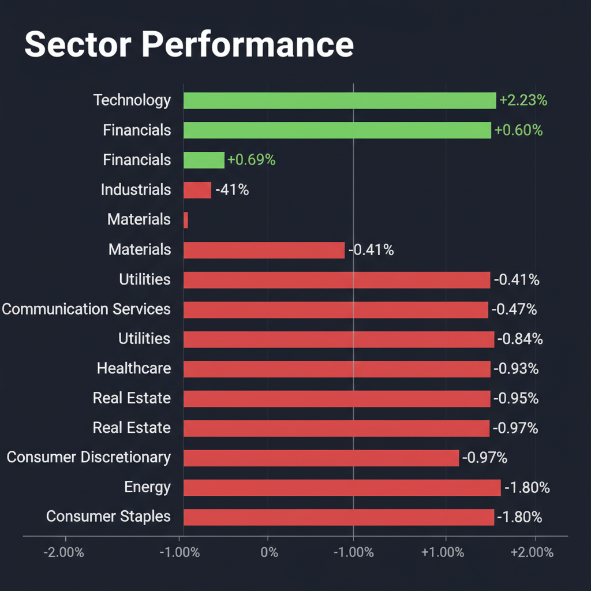
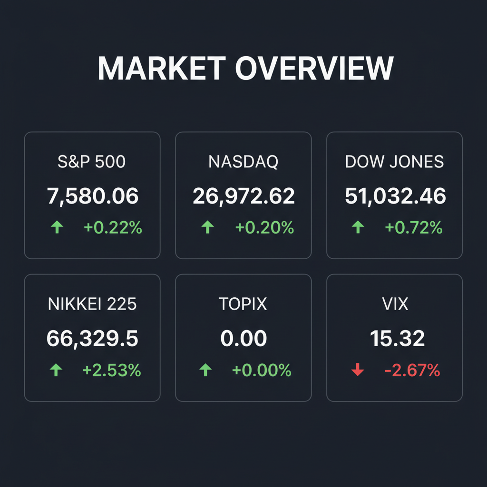

本日の投資チームミーティングの議論および最新のWeb調査結果、エージェント合議スコアリングを統合した、投資家向けの最終レポートを作成しました。
テーブルは使用せず、指示された箇条書きリスト形式で詳細を報告します。
各エージェントがWeb調査結果を踏まえて独立に10段階評価した結果です。平均7以上=強気、4〜6.9=中立、4未満=弱気。
| 銘柄 | ファンダメンタルズアナリスト | テンバガーハンター | マクロエコノミスト | テクニカルストラテジスト | リスクマネージャー | 平均 | 判定 |
| 7267 | 8 EV損失吸収、調整後利益堅調、割安感 | 8 EV損失消化、V字回復期待大 | 7 EV損失吸収、EV戦略転換に期待 | 7 EV損失後、黒字回復見込み、バリュエーション割安 | 8 EV損失吸収、黒字転換、割安感 |
7.6 | 強気 |
| RKLB | 7 売上・受注好調、増資は一時的押目 | 7 急成長だが増資で希薄化懸念 | 8 売上・受注残成長、増資は押し目買い | 7 好決算、受注残堅調、増資は成長資金 | 7 成長性高いが増資による希薄化懸念 |
7.2 | 強気 |
| REPL | 4 FDA合意で急騰も、赤字継続、インサイダー売り | 6 承認期待で株価急騰、リスクも | 2 承認期待も赤字継続、インサイダー売り懸念 | 4 FDA合意で株価急騰、しかし赤字継続、インサイダー売り警戒 | 2 株価急騰も赤字継続、インサイダー売り懸念 |
3.6 | 弱気 |
| 6526 | 3 赤字拡大、信用倍率高、短期高値警戒 | 3 営業益大幅減益、需給懸念あり | 4 営業赤字・株価割高・アナリスト弱気 | 3 営業益50%減、需給悪化、アナリスト目標株価下落 | 3 大幅減益、キャッシュフロー悪化、需給懸念 |
3.2 | 弱気 |
| 5595 | 1 上場廃止、赤字拡大、新コードもリスク高 | 1 上場廃止、赤字拡大リスク高 | 1 上場廃止、赤字拡大・資金調達リスク | 1 上場廃止のため評価不可 | 1 上場廃止、赤字拡大、資金調達リスク |
1 | 弱気 |
エージェントが推奨した中小型株について、Google検索で最新情報を調査した結果です。
ソシオネクスト（6526）に関する投資判断に必要な最新情報は以下の通りです。
* 売上高: 2,008億3,400万円（前期比6.5％増） * 営業利益: 123億5,400万円（前期比50.6％減） * 経常利益: 117億5,600万円（前期比53.2％減） * 親会社株主に帰属する当期純利益: 87億3,300万円（前期比55.4％減）
増収ながら大幅な減益となった主な要因は、比較的粗利率の低い新製品の量産開始により製品原価率が上昇したためです。これは「Jカーブ効果」と呼ばれる一時的な利益率低下の局面と説明されています。
2027年3月期の連結業績予想は、新規量産品の拡大により増収増益を見込んでいます。 * 売上高: 2,150億円（前期比7.1％増） * 営業利益: 140億円（前期比13.3％増） * 親会社株主に帰属する当期純利益: 100億円（前期比14.5％増） 中国車載向け量産品の拡大や、北米車載・北米データセンター向け新規量産品の販売開始が成長を牽引すると見られています。
本田技研工業（7267）に関する最新の投資判断に必要な情報を以下にまとめます。
銘柄: 7267 本田技研工業
1. 企業概要 本田技研工業は、二輪車、四輪車、パワープロダクツ（船外機、発電機、耕うん機など）の開発・製造・販売をグローバルに展開する大手メーカーです。特に二輪車では世界首位のシェアを誇り、四輪車でも世界的に上位のポジションを確立しています。その他、小型ビジネスジェット機「ホンダジェット」やロボットなどの事業も手掛けています。 2026年5月29日時点の時価総額は約6兆5,841億円（約354億ドル～382.8億ドル）です。北米地域が主要な収益源となっています。
2. 直近の業績・決算情報 2026年3月期の連結決算（IFRS）では、売上高は21兆7,966億円と増収を達成しました。しかし、EV（電気自動車）事業の再構築に関連する1兆5,778億円の損失が主要因となり、連結最終損益は4,239億円の赤字（前期は8,358億円の黒字）に転落しました。営業利益も4,143億円の赤字となりましたが、EV関連損失を除く調整後営業利益は1兆393億円を確保しています。 2027年3月期の業績予想では、売上高22兆円（前期比2.4%増）、最終利益2,600億円の黒字回復を見込んでいます。調整後営業利益は1兆円を予想しています。
3. 最新ニュース・材料（直近1-2週間） * 2026年5月29日：米国で約99,000台の車両がエアバッグの不具合によりリコールされると発表されました。 * 2026年5月21日：Q4 2026決算発表において、EPSが予想を大幅に上回ったことや、ハイブリッド車への戦略的転換が市場に評価され、時間外取引で株価が7.43%上昇しました。 * 2026年5月20日、19日：岩井コスモ証券など複数のアナリストが投資判断を引き上げ、株価の反発を後押ししました。 * 2026年5月14日：EV事業戦略の見直しに関連する多額の損失を計上し、約70年ぶりとなる年間純損失を計上した2026年3月期決算を発表しました。
4. アナリスト評価・目標株価 複数のアナリストによるコンセンサス評価は「買い（Buy）」または「Outperform」です。 平均目標株価は1,523.5円から1,526円程度で、S&P Globalの18人のアナリストによる平均目標株価は1,524円です。これは、2026年5月29日時点の株価から約3.75%～8.74%の上値余地を示唆しています。
5. リスク要因 * EV事業の再構築と大規模な損失: 2026年3月期に計上されたEV関連の多額の損失は、今後のEV戦略の進捗次第で引き続き財務に影響を与える可能性があります。 * 競争激化: 自動車業界、特にEV市場における競争は激しく、中国市場での競合激化もリスク要因です。 * 規制動向: 各国の環境規制や安全規制の変更が事業に影響を及ぼす可能性があります。 * サプライチェーン: 半導体などの部品供給不足が生産に影響を与える可能性も依然として存在します。 * 為替変動: グローバル企業であるため、為替レートの変動も業績に影響を与えます。
6. 株価の最近の動き 2026年5月29日時点の株価は1,452.5円です。5月20日の1,343円から5月29日には1,452.5円まで8.2%上昇し、5月18日の下落から回復基調にあります。 過去52週間の株価は1,238円から1,730円の範囲で推移しており、現在の株価は52週安値の1,238円を13.77%上回っています。しかし、過去6ヶ月間では日経225平均を24.71%下回るパフォーマンスとなっています。また、200日移動平均線を6.1%下回る水準で取引されています。
株式会社QPS研究所（証券コード：5595）は、2025年11月27日に現行株式の上場を終了し、上場廃止となりました。これに伴い、2025年12月1日には新設された持株会社である株式会社QPSホールディングス（証券コード：464A）が上場しています。したがって、以下の情報は主に上場廃止前の5595に関するもの、またはQPS研究所の事業内容として継続しているものを含みます。
上場廃止前の2025年11月26日時点での時価総額は、約837億円（83,701百万円）でした。 業界としては情報・通信業に分類され、小型SAR衛星技術において「圧倒的な軽さと高解像度の両立」を強みとし、日本の安全保障の目として唯一無二のポジショニングを確立しつつあると評価されています。 主な顧客は防衛・防災分野の国内官公庁です。
* 売上高: 4.25億円（前年同期比21.5％増） * 営業損失: 4.1億円（前年同期は2.28億円の損失） * 経常損失: 4.85億円（前年同期は2.65億円の損失） * 四半期純損失: 4.87億円（前年同期は19.03億円の損失）
売上高は増加しているものの、衛星機数の増加に伴う減価償却費などの売上原価が増加したことが主な要因となり、各利益は損失が拡大しています。
2026年5月期の通期業績予想（2025年7月11日公表、変更なし）では、売上高40億円（前期比49.2％増）、営業損失22億円、経常利益6億円、当期純利益5億円を見込んでいます。
直近の主なニュースとしては以下のものがあります。 * 2026年5月24日、日本経済新聞にファウンダー八坂哲雄氏の取材記事が掲載されました。 * 2026年5月11日、2026年5月27日～29日に開催される「第3回 SPEXA -Space Business Expo-」への出展および登壇が発表されました。 * 2026年5月7日、QPS-SAR13号機「ミクラ-Ⅰ」の打上げスケジュールに関するお知らせがありました。
参考として、上場廃止前の情報では、日系大手証券が2025年8月25日にレーティングを「強気（1）」に据え置き、目標株価を1,800円から2,600円に引き上げたことがありました。 また、2025年4月1日には、別の証券会社がレーティング「強気（1）」で目標株価1,800円と評価していました。
* 市場について: SAR衛星の世界市場は成長していますが、光学衛星と比較してSAR衛星の認知は依然として不十分です。現在の取引は防衛・防災分野の国内官公庁に限定されており、民間部門への拡大ペースが遅れる可能性があります。 * 競合について: 衛星リモートセンシング分野での事業展開において、今後、大手企業や新規参入企業による競争激化で市場シェアが急変する可能性があります。 * 財務上の懸念: 設立以来配当は実施しておらず、多額の先行投資（小型SAR衛星の製造および打上げ）を計画しているため、当面は研究開発資金の確保を優先する方針です。 直近の決算でも損失が拡大しており、キャッシュフローを超える投資により信用リスクが台頭する可能性や、資金調達環境が悪化した場合に厳しい状況に追い込まれる可能性が指摘されています。 * 技術情報等の流出: 重要な技術情報や地球観測衛星データを保有しており、システム障害や不正アクセス等による情報流出が発生した場合、社会的信用の低下、損害賠償、運用障害などにつながるリスクがあります。 * 地政学リスク: 米中対立の激化、中東情勢の不安定化、米国の通商政策の変化など、地政学リスクも常に意識する必要があります。
上場廃止前の最終取引日である2025年11月26日の終値は1,736.0円でした。 参考までに、2023年12月6日の上場時の初値は860円でした。
なお、2026年に入ってから、赤字基調にもかかわらず株価が急騰したという市場全体の「物語先行」のトレンドの一部として、QPS研究所の技術的優位性が評価されたとの言及もありますが、これは上場廃止前の期間や、現在のQPSホールディングス（464A）の動向に関連する可能性があります。
Rocket Lab USA, Inc.（RKLB）の投資判断に必要な最新情報を以下の通りまとめます。
Rocket Labは、ロケットと宇宙船の製造、および打ち上げサービスや宇宙システムソリューションを提供する宇宙企業です。 民生、防衛、商業市場に対応しており、小型打ち上げ機「Electron」および開発中の「Neutron」ロケット、さらには「Photon」衛星プラットフォームなどを手掛けています。 事業は「Launch Services（打ち上げサービス）」と「Space Systems（宇宙システム）」の2つのセグメントで構成され、特にSpace Systemsが最大の収益源となっています。 2026年5月29日時点の時価総額は約830.56億ドルです。 業界では、小型衛星打ち上げサービスプロバイダーのリーダーの一つであり、米国で打ち上げ頻度第2位の運搬ロケット「Electron」を運用しています。 極超音速試験打ち上げプログラム「HASTE」においてもカテゴリーリーダーとしての地位を確立しています。
最新の決算は2026年5月7日に発表された2026年第1四半期（Q1 2026）のもので、同社にとって過去最高の四半期売上高を記録しました。 * 売上高: 2億3百万ドルを計上し、前年同期比で63.4%増加しました。これはアナリスト予想の1億89.65百万ドルを上回るものでした。 * 利益: 1株当たり損失（EPS）は-0.07ドルで、コンセンサス予想と一致しました。 調整後EBITDAもガイダンスを上回っています。 * 成長率: 売上高は前年同期比63.4%増と大幅に成長し、受注残高（バックログ）は22億ドルに達し、前年同期比で108%増と著しい伸びを見せています。 2026会計年度も記録的な収益が予想されています。
* 2026年5月27日: 宇宙開発庁（SDA）のTracking Layer Tranche 3 (TRKT3) コンステレーションのシステム要件審査 (SRR) を成功裏に通過したと発表しました。 * 2026年5月26日: Motiv Space Systemsの買収を完了し、ロボット工学および宇宙船コンポーネントのポートフォリオを強化しました。 * 2026年5月22日: 米宇宙軍との人工衛星に関する9000万ドルの契約を獲得しました。 * 2026年5月21日: 最大30億ドルの普通株を売却する「ATM（アット・ザ・マーケット）」増資契約を締結したと公表し、株主価値の希薄化懸念から株価が一時下落しました。 * 2026年5月20日: NASAからEta SpaceのLOXSATミッション打ち上げに選定されました。 * 2026年5月7日: 2026年第1四半期決算発表と同時に、HASTE打ち上げ機を用いた極超音速試験飛行をカバーする3000万ドルのAndurilとの契約を発表しました。 * SpaceX IPOへの期待: SpaceXのIPOへの期待感が、宇宙セクター全体の株価を押し上げる要因の一つとなっています。
2026年5月29日時点でのアナリストのコンセンサス評価は「買い」です。 15人のアナリストのうち53%が「強気買い」、33%が「買い」、13%が「ホールド」を推奨しています。 平均目標株価については情報源によってばらつきがありますが、概ね93ドルから103.91ドルの範囲で提示されています。 最高目標株価は120ドル、最低は60ドルです。 最近では、Deutsche Bank（目標株価120ドルに引き上げ）、Needham（目標株価120ドルに引き上げ）、TD Cowen（目標株価120ドルに引き上げ）、Stifel Nicolaus（目標株価105ドルに引き上げ）、Craig Hallum（「ホールド」から「買い」に格上げし98ドル設定）などが目標株価を引き上げています。
* 政府契約への高い依存: 米国政府との契約に大きく依存しており、これが株価に否定的な見方をもたらす可能性があります。 * 競合: SpaceXなど、代替の打ち上げオプションを提供する競合が存在します。 * 収益性の維持: 打ち上げの受注残や平均販売価格（ASP）から、収益性を維持することが課題となる可能性があります。 * Neutronプログラムの達成: 開発中のNeutronロケットの24時間再飛行能力の目標達成に遅延が生じるリスクがあります。 * タンクの性能懸念: タンクの完全性と性能に関する継続的な懸念が、打ち上げ市場での進捗や収益性を妨げる可能性があります。 * 株式希薄化: 最近発表された最大30億ドルの普通株売却契約により、既存株主の持ち分が希薄化する懸念があります。 資本集約的なビジネスモデルであるため、資金調達に関する発表には市場が敏感に反応しやすい傾向があります。
RKLBの株価は、2026年5月29日時点で143.48ドルで取引されており、前日比-3.07%です。 過去1年間で株価は414.06%の上昇を記録しており、52週間のレンジは25.24ドルから151.00ドルです。 2026年5月上旬に発表された好決算を受けて株価は一時的に大幅に上昇し（1日で+34%）、5月28日には52週高値の151.00ドルを記録しました。 しかし、その後、普通株売却契約の発表により株価は下落に転じました。 短期・中期（5日線、25日線、75日線）いずれも上昇トレンドを示しています（5月28日時点）。
REPL (Replimune Group, Inc.) に関する最新の投資判断に必要な情報は以下の通りです。
1. 企業概要 Replimune Group, Inc.（REPL）は、がん治療のための腫瘍溶解性免疫療法を開発する臨床段階のバイオテクノロジー企業です。独自のRPxプラットフォームを活用し、免疫原性細胞死と全身性抗腫瘍免疫応答の誘導を最大化する強力な単純ヘルペスウィルス1型（HSV-1）バックボーンに基づいた治療法を開発しています。主力製品候補である「RP1」は、進行性黒色腫の潜在的な治療薬として開発が進められています。その他、パイプラインには「RP2」と「RP3」が含まれます。
直近の時価総額は、2026年5月29日時点で約6.88億ドルと報告されています。
2. 直近の業績・決算情報 同社は臨床段階の企業であるため、現時点では収益は発生していません。2022年3月期から2025年3月期までの売上高は0ドルです。
直近の業績では、2025年3月期の純利益は-247,297千ドル（前年比14.6%の減益）でした。1株あたり利益（EPS）は-3.1ドル（前年比5.2%の改善）となっています。 2026年Q3のEPSは-0.77ドルで、予想の-0.83ドルを上回りました。 直近四半期（おそらく2026年Q3）の純利益は-70.93百万ドルでした。 営業利益および税後純利益はマイナス成長が続いています。
3. 最新ニュース・材料（直近1-2週間） 最も重要なニュースとして、2026年5月29日にReplimune社は、進行性黒色腫治療薬RP1とニボルマブの併用療法に関する生物製剤承認申請（BLA）の再提出について、米国食品医薬品局（FDA）と合意に達したと発表しました。同社は数日以内にBLAを再提出する予定であり、FDAは緊急案件として優先的に審査する方針を示しています。この発表を受け、Replimune社の株価は大幅に急騰しました。
また、2026年5月20日には、Replimune社の幹部陣による株式の大量売却があったとのインサイダー取引情報も報告されています。
4. アナリスト評価・目標株価 FactSetがアナリストを対象に実施した調査によると、Replimune Group (REPL) の平均レーティングは「アンダーウェイト」、平均目標株価は2.20ドルです。 一方、別の情報源では、8人のアナリストによるコンセンサスレーティングは「Hold」（75%がHold、13%がStrong Buy、13%がBuy）で、2026年の目標株価は7.12ドルとされています。 みんかぶの目標株価は「5.67ドル」で「買い」評価、AI株価診断は「割安」、証券アナリスト予想は「中立」と判断されています。
5. リスク要因 * 規制上の課題: 主力開発品であるRP1のFDA承認プロセスには引き続き課題が存在します。 * 財務上の懸念: 臨床段階のバイオテクノロジー企業であるため、現時点で収益がなく、継続的な営業損失と純利益のマイナスが続いています。 * パイプラインの成功への依存: 同社の将来は、RP1を含むパイプライン製品の臨床開発の成功と規制当局の承認に大きく依存しています。 * インサイダー取引: 幹部による株式売却のニュースは、投資家心理に影響を与える可能性があります。
6. 株価の最近の動き（直近のトレンド） 2026年5月29日のFDAとの承認申請再提出合意のニュースを受けて、Replimune社の株価は大幅に急騰しました。同日の前場取引では42%急騰し、5月29日12:34 ET時点では8.335ドル（+78.10%）、 14:16現地時間では8.74ドル（+86.75%）を記録しました。 このニュース以前の5月27日の終値は4.60ドル前後でした。 この直近の急騰は、主要な治療薬候補の承認に向けた進展に対する市場の強い反応を示しています。